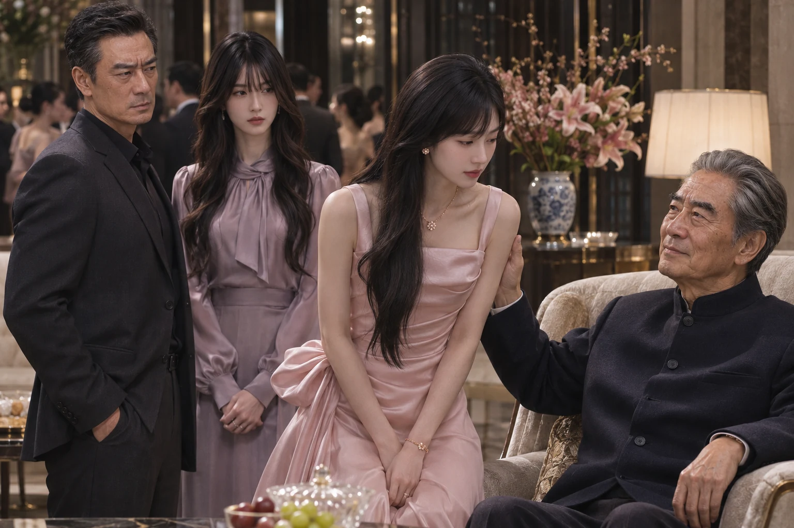
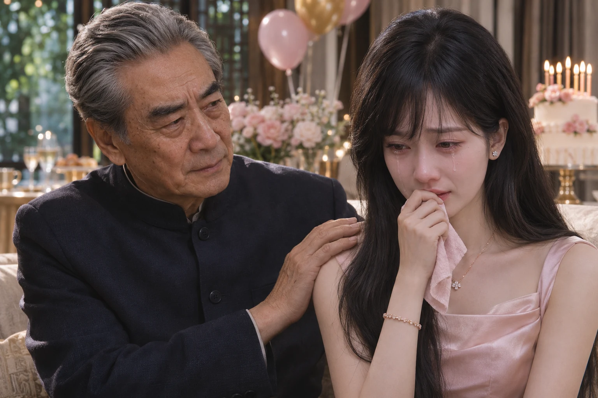
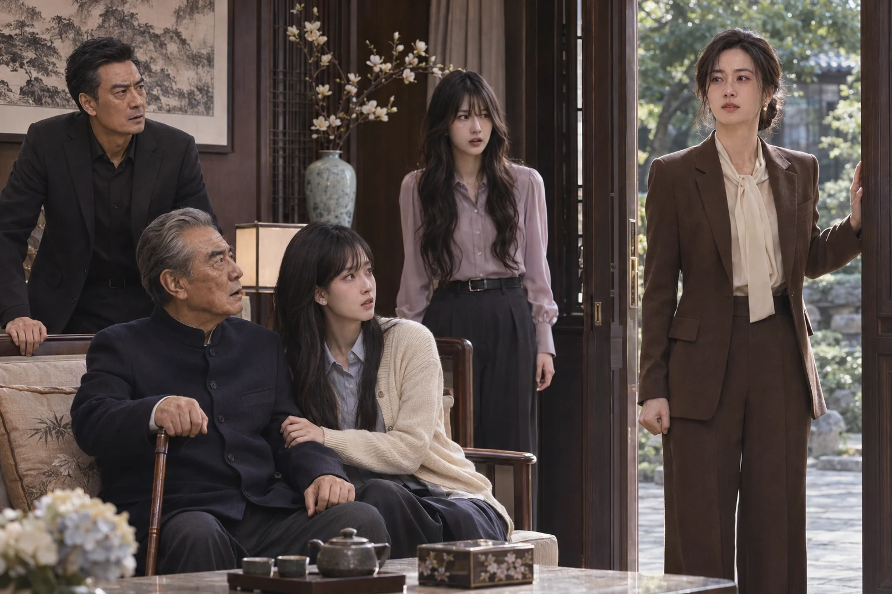
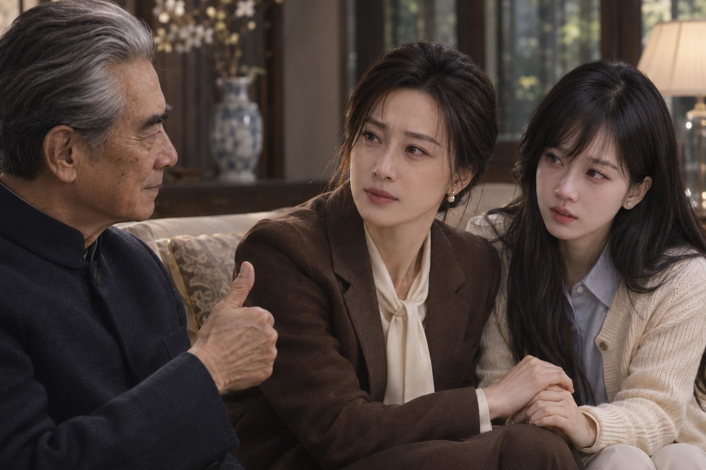
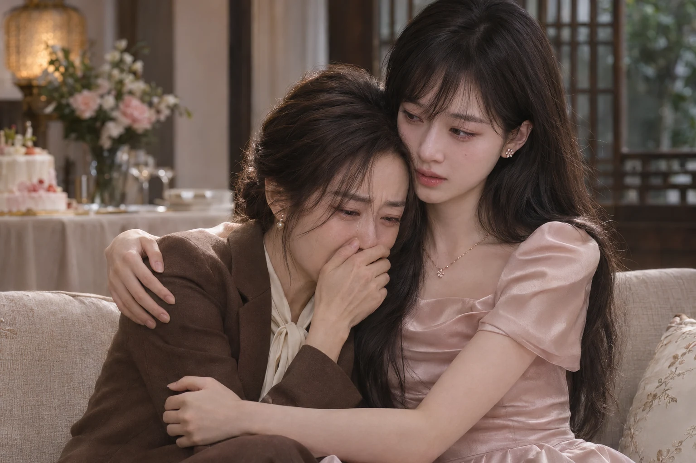

ตอนที่ 05
เปลี่ยนแปลง
ซ่งเหวินเถียงไม่ออก เพราะเขาก็วางแผนว่าจะมีสองบ้านจริง ๆ ฝ่ายหนึ่งเป็นภรรยาที่เขารัก ส่วนอีกฝ่ายหนึ่งเป็นภรรยาที่สามารถพาออกหน้าออกตาต่อได้โดยไม่ขายขี้หน้าใคร
ซึ่งฮวาผิงเองก็ยินดีอยู่เป็นบ้านรองอย่างเงียบ ๆ ทั้งที่มาก่อนโจวจิ่วหลายปี เธอบอกเขาว่าชีวิตไม่ต้องการอะไร แค่อยากอยู่อย่างสงบ ๆ ในบ้านหลังเล็ก ๆ อันอบอุ่น ขอลูกให้เธอสักคน เธอจะได้ไม่เหงายามที่เขาต้องกลับไปอยู่กับเมียแต่ง
ตลอดเวลาที่ผ่านมาเขาจึงเดินทางไปมาทั้งสองบ้าน ช่วงเวลาที่เขาบอกกับโจวจิ่วว่ามีประชุม หรือต้องไปดูงานต่างเมือง รวมไปถึงดูงานต่างประเทศ เขาใช้เวลานั้นมาพักใจกับฮวาผิง
“ลูกสาวแกเกิดเดือนไหน”
“เดือนสี่ครับ” ซ่งเหวินไม่กล้าละเลยคำถามของผู้เป็นพ่อ มือยังคงกุมศีรษะ โชคดีที่เลือดไหลออกมาไม่มักนัก บาดแผลไม่ใหญ่ถึงขั้นต้องรีบเข้าห้องฉุกเฉิน
“ลูกนอกสมรสเกิดเดือนสี่ แต่เสี่ยวอวิ๋นเกิดเดือนหก แกคิดว่าหลังจากฉันตายไป จะแก้ตัวกับเฒ่าโจวยังไงดี ตอนนี้ครอบครัวโจวมีแค่โจวจิ่วคนเดียวแล้ว จิตใต้สำนึกของแกโดนสุนัขกินไปหมดกระมัง” ผู้เฒ่าซ่งพึมพำอย่างอ่อนแรง วันนี้เขาเจอเรื่องราวหนักหนาเกินไป ทั้งผิดหวัง เสียใจ และรู้สึกผิดกับสหายผู้ล่วงลับ
ทั้งที่เฒ่าโจวฝากฝังโจวจิ่วไว้กับเขา สุดท้ายแล้วลูกชายที่เขาหลงภาคภูมิใจมาตลอดชีวิต กลับทำร้ายครอบครัวได้อย่างเลือดเย็นที่สุด
“คุณพ่อ.. ไหวหรือเปล่าคะ” แม้ผู้เฒ่าซ่งจะระบายโทสะใส่ซ่งเหวินแค่ไหน ซ่งหว่านก็ยังคอยดูแลถามไถ่ซ่งเหวินอย่างเป็นห่วงเป็นใยอยู่ตลอด ใครมองก็ต้องสงสาร
“พ่อไม่เป็นไร ลูกวางใจเถอะ”
“ออกจากบ้านไปซะ ฉันไม่อยากเห็นหน้าแก”
ซ่งเหวินกลอกตาไปมา สมองแล่นเร็วจี๋ก่อนเหลือบไปเห็นลูกสาวคนเล็กซึ่งยืนอยู่ตรงประตู หากเขาออกไปตามคำสั่งของพ่อ บางทีเรื่องราวอาจแก้ไขไม่ได้ ดังนั้นอาจต้องพึ่งพาลูกสาวคนเล็กให้ช่วยเหลือ
“เสี่ยวอวิ๋น.. มาหาพ่อ”
ม่านตาผู้เฒ่าซ่งสั่นไหว นึกไม่ถึงว่าซ่งเหวินจะไม่รู้สึกผิด กล้าดึงซ่งอวิ๋นเข้ามามีส่วนร่วมกับเรื่องนี้ ทว่าชายชราไม่พูดอะไร รอดูท่าทีของหลานสาวอยู่เงียบ ๆ
ซ่งอวิ๋นไม่ตอบรับหรือปฏิเสธ ยอมก้าวเข้าไปในห้องโถง แต่เธอไม่ได้ไปอยู่ข้างซ่งเหวิน กลับไปยืนด้านหลังปู่ซ่ง เป็นการแสดงออกว่าเธอเลือกข้างแล้ว
ทว่าซ่งเหวินไม่สังเกตเห็นในจุดนี้ “เสี่ยวอวิ๋น ถ้าพ่อออกไปจากที่นี่ ลูกไปอยู่กับพ่อหรือเปล่า”
หนุ่มใหญ่รู้ดีว่าซ่งอวิ๋นเปรียบเสมือนไข่มุกบนฝ่ามือของผู้เฒ่าซ่ง ดังนั้นขอเพียงซ่งอวิ๋นแสดงออกว่าไม่อยากให้เขาไปจากที่นี่ พ่อของเขาจะต้องลดความแข็งกร้าวลงแน่
“หนู.. อยากอยู่กับคุณปู่ คุณพ่อมีพี่สาวอยู่ด้วยแล้ว หนูคงไม่จำเป็นสำหรับพ่อแล้ว” ซ่งอวิ๋นยิ้มทั้งน้ำตา

“เสี่ยวอวิ๋น!!” ซ่งเหวินเผลอขึ้นเสียงใส่เมื่อลูกสาวเอาแต่ใจไม่รู้จักเวล่ำเวลา ถ้าไม่อยากให้พ่อแม่หย่ากัน ครอบครัวแตกสลาย เธอควรฉลาดและทำความเข้าใจสถานการณ์ให้ดีกว่านี้
“แกตะคอก อวิ๋นเอ๋อร์ทำไม ออกไป!” ผู้เฒ่าซ่งควันออกหูอีกรอบ ถึงกับเขวี้ยงไม้เท้าใส่ซ่งเหวิน
“อึก” ซ่งเหวินร้าวระบมไปทั้งตัว เขาเริ่มสงสัยแล้วว่าตนเองกระดูกหักหรือไม่
“อวิ๋นเอ๋อร์ มานั่งกับปู่ตรงนี้”
หลานสาวคนนี้เขาเลี้ยงดูมา ถนอมยิ่งกว่าไข่ในหิน นอกจากให้เรียนศิลปะการต่อสู้เพื่อปกป้องตัวเองแล้ว เขายังไม่เคยดุด่าว่ากล่าว แล้วครั้งนี้เสี่ยวอวิ๋นไม่ผิด มีสิทธิ์อะไรมาทำให้หลานสาวเขาตกใจ
“คุณปู่..” ซ่งอวิ๋นเม้มปากแน่น ยอมมานั่งข้างกายปู่ซ่งอย่างว่าง่าย ทว่าน้ำตาเธอกลับหยดแหมะ ๆ
ความเสียใจก็ส่วนหนึ่ง แต่เธอเพียงแค่อยากลองเปลี่ยนวิธีการดู ไม่ร้องไห้โวยวาย หรืออาละวาด พยายามตั้งสติและตั้งรับความเสียใจที่สาดเข้ามาประหนึ่งคลื่นยักษ์
แล้วมันก็ถูกอย่างที่เขาว่า เด็กร้องไห้เป็น มักได้กินลูกอม ตอนนี้เธอกำลังใช้สิ่งนี้รับมือกับพี่สาวซึ่งพ่วงตำแหน่งนางเอก
“ไม่เป็นไร ไม่ต้องร้องไห้ วันนี้พ่อของหลานทำผิด หากหลานไม่ต้องการไปอยู่ข้างนอกกับพ่อ หลานก็อยู่ที่นี่ได้ ยังไงปู่ก็เป็นผู้ปกครองทางกฎหมายของหลานอยู่แล้ว”
ผู้เฒ่าซ่งลูบหลังลูบไหล่หลานสาว สาเหตุที่เขาเป็นผู้ปกครองทางกฎหมายร่วมกับโจวจิ่ว เนื่องจากก่อนหน้านี้ซ่งเหวินอ้างว่างานค่อนข้างยุ่ง เลยไม่ค่อยมีเวลามาทำหน้าที่ผู้ปกครอง ยามต้องไปที่หน่วยงานของทางภาครัฐ

ตอนนี้ดีเลย ซ่งเหวินไม่มีสิทธิ์ในตัวลูกเท่าเขา ดังนั้นเขาจะดูแลหลานสาวไว้ข้างกาย
“แต่ผมกับอาจิ่วยังไม่หย่ากัน” ซ่งเหวินเริ่มโมโห ต่อให้เขาทำผิด พ่อไม่ควรเด็ดขาดกับเขาขนาดนี้
“นั่นเป็นการตัดสินใจของพวกแกเอง จะรักหรือเลิกก็ไม่เกี่ยวอะไรกับฉัน แต่ฉันจะไม่ปล่อยให้หลานสาวฉันไปอยู่ข้างนอก” ซ่งเหวินแค่นเสียงขึ้นจมูก ในใจก็รู้ดีว่าลูกสะใภ้เป็นคนใจอ่อน บางครั้งก็หัวอ่อนไม่น้อย เธอคงตัดใจไม่ได้ในเวลาอันสั้นแน่นอน
“ฉันจะหย่า..” เสียงเจือสะอื้นดังขึ้นหน้าประตูห้องโถง โจวจิ่วแอบฟังอยู่พักใหญ่แล้ว แต่ยิ่งฟังก็ยิ่งรู้สึกว่าสามีของเธอกลายเป็นใครที่เธอไม่รู้จัก เขาเห็นแก่ตัวขนาดนี้ได้อย่างไรกัน

“!!” การตัดสินใจอย่างเด็ดเดี่ยวของโจวจิ่วสร้างความตกตะลึง ซ่งเหวินหน้าเปลี่ยนสี ไม่คิดว่าจะได้ยินคำว่า ‘หย่า’ จากปากผู้หญิงที่เขาคิดว่าควบคุมไว้กลางฝ่ามือมาตลอดชีวิต
ขณะเดียวกันซ่งหว่านใจกระตุก เหตุการณ์นี้ผิดแผกจากชาติก่อนเกินไป ทว่าเธอยังไม่กระโตกกระตาก เฝ้าดูสถานการณ์ต่อไปเงียบ ๆ
“คุณแม่.. เป็นยังไงบ้างคะ” ซ่งอวิ๋นประคองมารดาให้นั่งลงข้างกาย
“แม่ดีขึ้นแล้ว”
“ขอบคุณที่ดูแลแม่แทนหนูนะคะอารอง” ซ่งอวิ๋นปาดน้ำตาลวก ๆ พยายามยิ้มทั้งที่ยังเศร้าหมอง
“ไม่เป็นไรหรอกลูก แค่เรื่องเล็กน้อย” ซ่งเซียงว่าแล้วก็ดึงลูกชายทั้งสองถอยออกไป ปล่อยให้พี่สะใภ้ตัดสินใจเรื่องใหญ่ในชีวิตได้โดยสะดวก
“อาจิ่ว อยากจะหย่าใช่ไหม”
“ค่ะคุณพ่อ หนูต้องการหย่า”
“ผมไม่หย่า.. อาจิ่ว ผมยังรักคุณอยู่นะ”
“รักฉัน? ถ้าคุณรักฉันคงไม่หลอกลวงกันตั้งแต่แรกเจอ ฉันจำได้ ผู้หญิงที่ชื่อฮวาผิงเป็นคนรักของคุณ ลูกสาวหน้าตาเหมือนเธอราวกับถอดแบบกันออกมา ตอนนั้นคุณบอกว่าเลิกกับเธอแล้วและต่างคนต่างไปมีชีวิตใหม่ คุณอยากสร้างครอบครัวกับฉัน พวกเราเลยแต่งงานกัน”
โจวจิ่วดวงตาล่องลอย ทบทวนเรื่องราวในอดีต หัวใจปวดร้าวราวกับถูกฝ่ามือของใครบางคนควักมันออกไปบีบขย้ำ
ซ่งอวิ๋นเม้มปากแน่น ในความฝัน.. แม่ไม่มีใครหนุนหลังเช่นนี้ คุณปู่ล้มป่วยกลายเป็นเรื่องใหญ่มากกว่าเรื่องที่พ่อของเธอมีสองบ้าน ดังนั้นท่านจึงทุ่มเทเวลาดูแลพ่อสามี เพื่อให้ตัวเองหลงลืมเรื่องทุกข์ใจ
วันนี้แตกต่างกัน พ่อสามีที่เปรียบเสมือนพ่อแท้ ๆ ยังคงมีชีวิตอยู่ มิหนำซ้ำยังแสดงท่าทีไม่ต้อนรับซ่งหว่านอย่างชัดเจน เธอจึงมีความกล้าขึ้นมา
“หนูขอโทษค่ะคุณป้า ขอโทษจริง ๆ คุณป้าอย่าทอดทิ้งคุณพ่อเลยนะคะ หนูขอโทษแทนคุณแม่ด้วย” ซ่งหว่านตัดสินใจโขกศีรษะดังปัง ๆ จนหน้าผากเริ่มแดงและปูดบวม
ซ่งเหวินตกใจ คว้าตัวลูกสาวมากอดไว้อย่างหวงแหนอีกครั้ง “เสี่ยวหว่านอย่าทำแบบนี้ เรื่องของผู้ใหญ่ ไม่ใช่ความผิดของลูกเลยสักนิด”
“ใช่ นั่นไม่ใช่ความผิดของเด็ก” โจวจิ่วยิ้มทั้งน้ำตา ก่อนหันไปหาผู้เฒ่าซ่ง “พ่อคะ หนูอยากหย่าให้เร็วที่สุด ถ้าเขาไม่หย่า หนูต้องการฟ้องหย่า คุณพ่อคัดค้านไหมคะ”
“แน่นอนว่าไม่” ผู้เฒ่าซ่งรับคำหนักแน่น เห็นลูกสะใภ้ผู้อ่อนหวานและยอมโอนอ่อนผ่อนตามสามีมาเสมอคนนี้ลุกมาปกป้องศักดิ์ศรีตัวเอง พานให้อดคิดถึงสหายเก่าเสียไม่ได้

“ผมไม่หย่า ยังไงก็ไม่หย่า” ซ่งเหวินผุดลุกขึ้นยืนเต็มความสูง ทำท่าจะเข้าไปคว้าแขนภรรยา แต่ถูกบอดี้การ์ดมากฝีมือข้างกายผู้เฒ่าซ่งห้ามไว้
“เก็บของส่วนตัวซ่งเหวิน แล้วส่งตัวเขาออกไปจากบ้านหลังนี้”
“พ่อ.. ให้โอกาสผมแก้ตัวหน่อยเถอะ ผมรู้แล้วว่าผิด” ซ่งเหวินดีดดิ้น ซึ่งใบหน้าเต็มไปด้วยเลือดที่เริ่มแห้งกรัง ทุกอย่างผิดแผนไปหมด รู้ว่าพ่อต้องโกรธ แต่ไม่นึกว่าท่านจะเด็ดขาดถึงขั้นไล่เขาออกจากบ้านเช่นนี้
ผู้เฒ่าซ่งไม่สนใจเสียงร้องประท้วงของลูกชาย หันไปสั่งกับเลขาคนสนิทเรียบ ๆ “ตั้งแต่พรุ่งนี้ประกาศออกไปว่าเราจะปลดนายท่านซ่งเหวินลงจากตำแหน่งประธานบริษัท ให้อาเซวียนขึ้นมานั่งตำแหน่งนี้แทน”
“พ่อ!!” คราวนี้ซ่งเหวินโกรธขึ้นมาแล้วจริง ๆ “ที่จริงแล้วพ่อรอโอกาสนี้อยู่ใช่ไหม พ่อปูทางให้น้องเล็ก แค่รอให้ผมทำพลาด เลยถือโอกาสปลดผมจากตำแหน่ง”
“พี่ใหญ่” ซ่งเซวียนสะอึกอึ้ง สายตาที่พี่ชายมองเขา เหมือนมองศัตรูมากกว่ามองน้องชาย
ที่ผ่านมาเขาไม่เคยรู้เลยว่าลึก ๆ พี่ชายคิดกับเขาอย่างไร ตอนนี้เหมือนจะได้รู้แล้ว
“หนวกหู พาตัวไปได้แล้ว” ผู้เฒ่าซ่งไม่อยากต่อความยาวสาวความยืด แค่นี้หลานสาวและลูกสะใภ้ก็บอบช้ำพอแล้ว
นายท่านใหญ่ซ่งถูกพาตัวออกจากบ้านไปอย่างรวดเร็ว แต่แทนที่ซ่งหว่านจะรีบวิ่งตามพ่อออกไป เธอกลับนั่งเผชิญหน้ากับสมาชิกบ้านซ่งอย่างตรงไปตรงมา
“หนูขอโทษอีกครั้ง สิ่งที่แม่ของหนูทำมันผิดจริง ๆ ไม่ต้องห่วงนะคะ หนูจะไม่สร้างความลำบากใจให้ทุกคนแน่นอน” ว่าแล้วเธอก็โขกศีรษะอีกครั้ง จากนั้นค่อยสะพายกระเป๋าแล้วออกจากตัวบ้านไปด้วยท่าทางหม่นหมอง
ซ่งอวิ๋น “...”
พี่สาวนอกสมรสคนนี้ ฉลาดในการเก็บอารมณ์ ไม่หลุดพิรุธให้เห็นเลย
คล้อยหลังสามี ความเข้มแข็งทั้งหมดของโจวจิ่วพังทลายลง เธอปล่อยโฮออกมาราวกับโลกจะถล่ม ซ่งอวิ๋นกอดมารดาไว้ในอ้อมแขน หลุบตาลงปกปิดความวูบไหวและวาวโรจน์ในดวงตา
